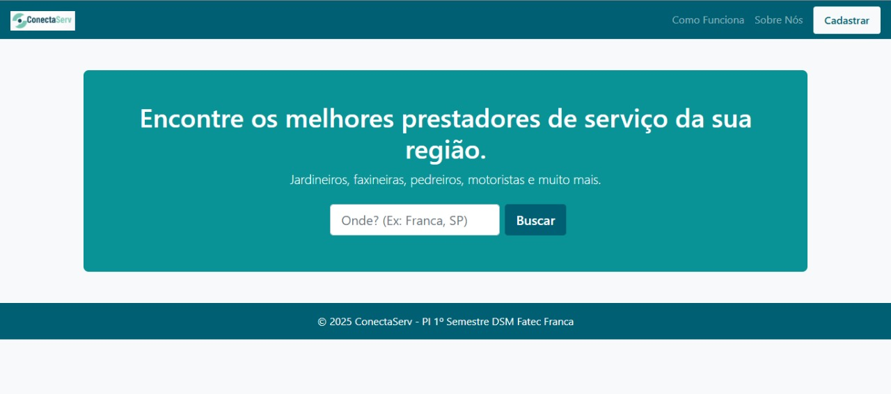
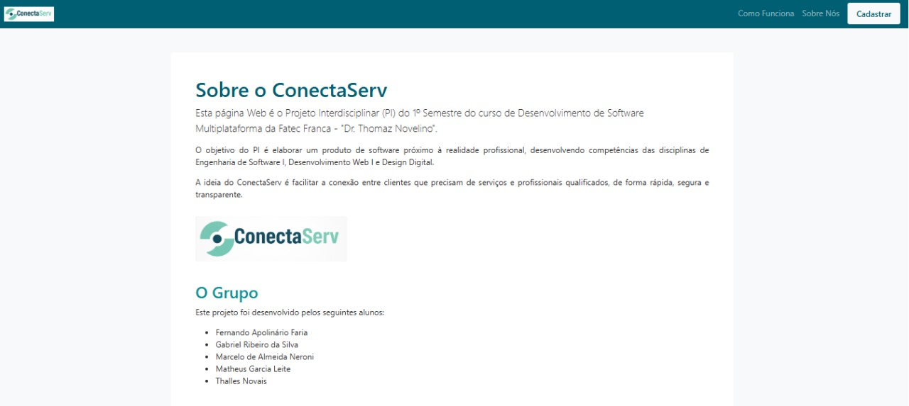
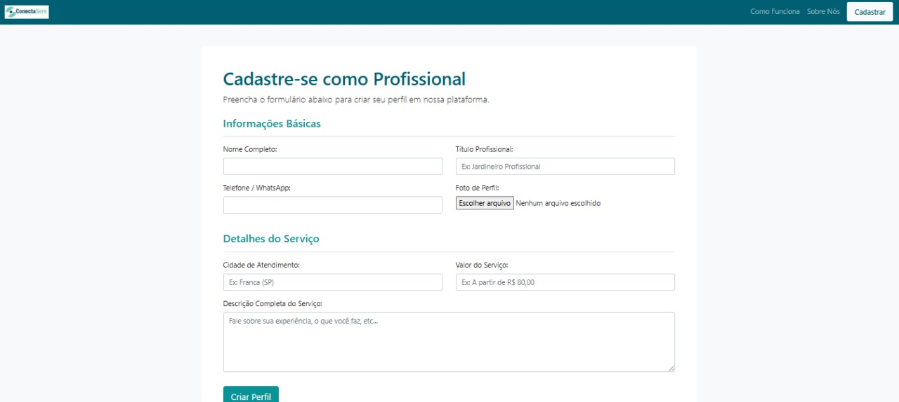
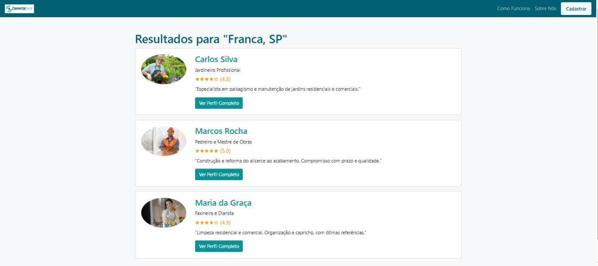
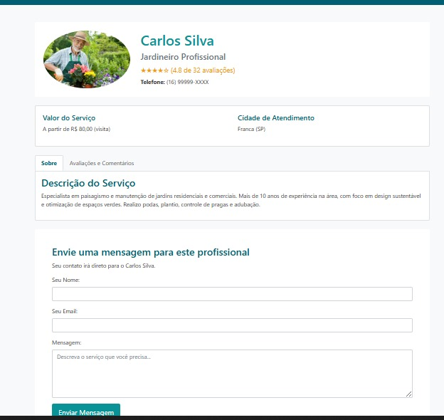
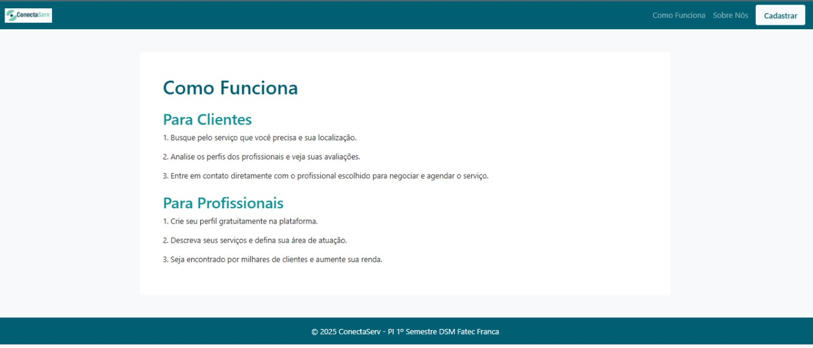

Manual Oficial – Identidade Visual do ConectaServ
"Conectando quem precisa a quem sabe fazer"
Site: ConectaServ – Marketplace de Prestadores
Disciplina: Design Digital – DSM
Instituição: Fatec Franca – PI 1º Semestre
Ano: 2025
1. Introdução
Este manual apresenta a identidade visual oficial do site ConectaServ, uma plataforma Web focada em conectar clientes a prestadores de serviço da sua região.
Aqui estão registradas as diretrizes de uso do logo, paleta de cores, tipografia e componentes de interface, garantindo consistência visual em todas as telas do projeto.
2. Sobre a Marca
O ConectaServ é um marketplace de serviços locais que facilita a conexão entre clientes e prestadores como jardineiros, pintores, diaristas, eletricistas, pedreiros e outros profissionais.
O que o site oferece?
- Busca por profissionais filtrada pela cidade;
- Perfis completos com foto, preço e avaliação;
- Sistema de contato direto;
- Área para prestadores criarem um perfil profissional.
Público-alvo
Clientes que buscam confiança e agilidade para contratar serviços, e profissionais autônomos que precisam de visibilidade.
3. Motivações e Propósito
Benefício para o usuário
Encontrar rapidamente um profissional confiável, com avaliações reais e informações organizadas.
Dor atendida
Centralizar informações para evitar depender apenas de "indicação" sem referências confiáveis.
Diferencial
Interface simples, objetiva e pensada para decisão rápida.
4. Slogan
"Conectando quem precisa a quem sabe fazer."
5. Processo Criativo
A identidade visual foi construída com base em três pilares: Conexão, Confiança e Profissionalismo.
Explorações e testes
O grupo testou formas circulares, ícones de conexão e variações de tipografia até chegar ao visual atual.
6. Logotipo Final
O logotipo usa ícone circular representando conexão entre cliente e profissional, acompanhado do nome da plataforma.

7. Variações do Logotipo
- Logo colorido (versão principal);
- Logo monocromático para fundos complexos;
- Versão negativa (branco sobre verde petróleo);
- Ícone reduzido para favicon ou thumbnail.
8. Paleta de Cores Oficial
A paleta foi definida para comunicar confiança, clareza e simplicidade visual.
Cores Primárias
HEX:
#006D75
HEX:
#2CA6A4
Cores Neutras
HEX:
#F5F5F5
HEX:
#FFFFFF
HEX:
#2D2D2D
9. Tipografia
A tipografia oficial usa a família Poppins, moderna e legível, nas variações Regular, Medium e SemiBold.
10. Aplicações da Marca
- Cabeçalho com logo branco em fundo verde petróleo;
- Cards brancos com sombra leve e destaques em verde;
- Botões com bordas arredondadas e destaque em verde;
- Campos de formulário limpos e claros.
11. Proibições de Uso
- Alterar cores do logo;
- Distorcer ou esticar o logotipo;
- Aplicar efeitos exagerados (sombra, brilho, 3D);
- Rotacionar o ícone;
- Usar tipografias fora da família escolhida.
12. Protótipo / Prints do Site Real






13. Créditos do Grupo
1. Fernando Apolinário Faria — Interface / Front-end
2. Gabriel Ribeiro da Silva — Conteúdo / Auxílio Front-end
3. Marcelo de Almeida Neroni - UI
4. Matheus Garcia Leite — Documentação e Testes
5. Thalles Novais — UX e Refinamento